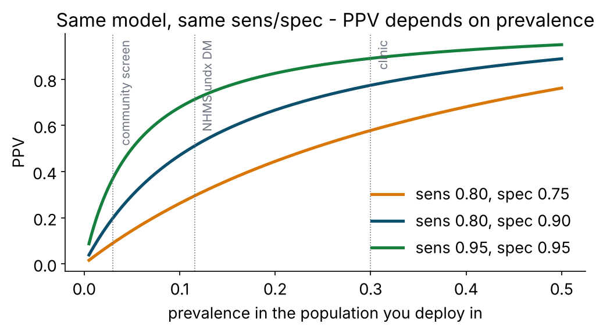
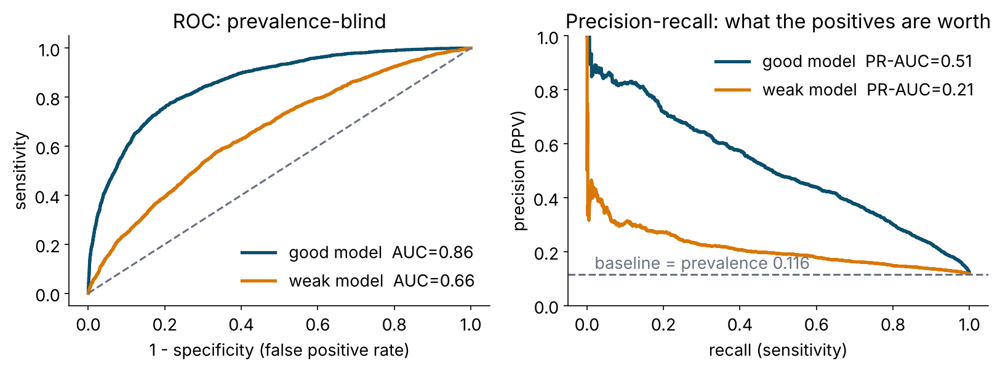
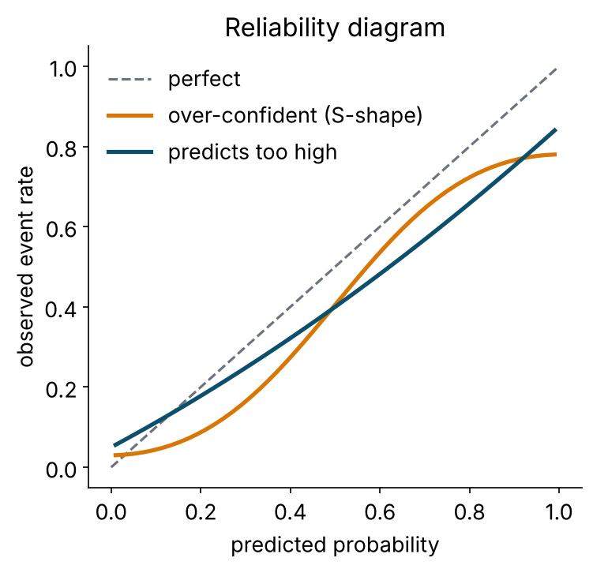
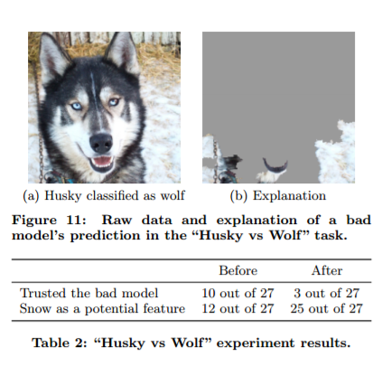
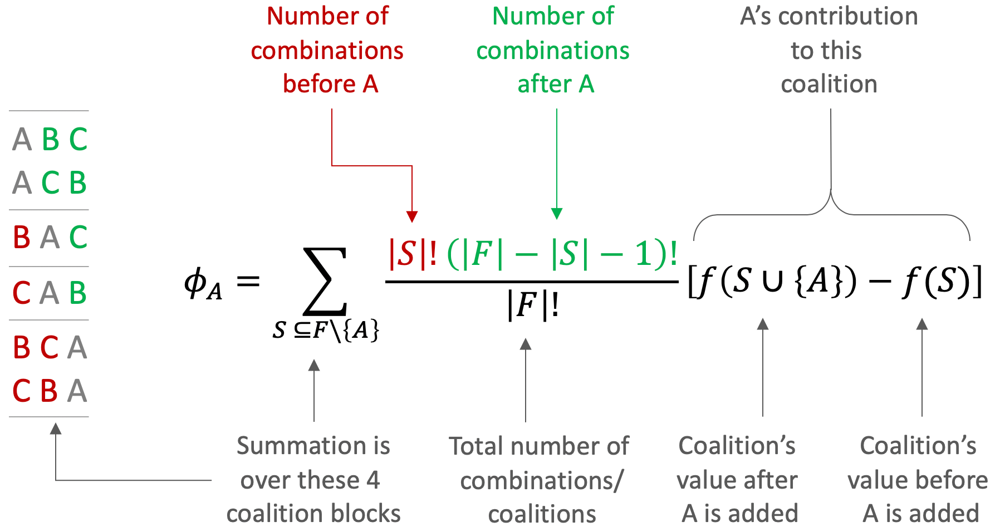

augment(xgb_fit, dm_test) |> select(undx_dm, .pred_Yes, .pred_class)
#> undx_dm .pred_Yes .pred_class
#> No 0.07 No
#> Yes 0.41 No <- a "miss" at threshold 0.5; a "hit" at 0.3Evaluation and explainability
07 · Predictive Intelligence in R · Day 2, 11.50–13.00 · Tutorial 6
Vivek Jason Jayaraj · Centre for Population Health, Universiti Malaya
2026-11-12
A model is a probability. A decision is a threshold.
- Every classifier we built outputs P(Yes).
.pred_classis justP(Yes) ≥ 0.5. - 0.5 is a software default. It encodes the belief that a false positive and a false negative cost the same. In screening they never do.
- So: evaluate the probabilities (discrimination, calibration) and the decision (confusion matrix at the threshold you will actually use).
Evaluating the decision
The confusion matrix, with its clinical names
| Truly Yes | Truly No | ||
|---|---|---|---|
| Predicted Yes | True positive (TP) | False positive (FP) | PPV = TP / (TP+FP) |
| Predicted No | False negative (FN) | True negative (TN) | NPV = TN / (TN+FN) |
| Sensitivity = TP / (TP+FN) | Specificity = TN / (TN+FP) |
| Metric | Other names | Asks |
|---|---|---|
| Sensitivity | recall, TPR | of the people who have it, how many did we flag? |
| Specificity | TNR | of the people who don’t, how many did we leave alone? |
| PPV | precision | of the people we flagged, how many have it? |
| NPV | — | of the people we cleared, how many are truly clear? |
| Accuracy | — | overall fraction right (useless when classes are imbalanced) |
| F1 | — | harmonic mean of precision and recall (ignores TN; use with care) |
| Youden’s J | — | sens + spec − 1 |
| Balanced accuracy | — | (sens + spec) / 2 |
| MCC, kappa | — | chance-corrected agreement |
Accuracy at 11.6 % prevalence
A model that says “No” to everyone has accuracy 0.884, sensitivity 0, and finds nobody.
Our honest logistic model at threshold 0.5: accuracy ≈ 0.89, sensitivity ≈ 0.2. It is barely better than the useless model on accuracy and vastly better on what matters.
Never lead with accuracy for an imbalanced outcome. Lead with sensitivity and specificity at the operating threshold, PPV/NPV at the prevalence you validated in, and AUC with a CI.
PPV is not a property of the model

\[\text{PPV} = \frac{\text{sens} \times \text{prev}}{\text{sens} \times \text{prev} + (1-\text{spec})(1-\text{prev})}\]
Validate in a clinic at 25 % prevalence, deploy at a pasar malam at 4 %, and the same model’s PPV falls by two thirds. Report the prevalence. Recompute PPV for the deployment population.
Evaluating the probabilities
ROC and AUC

- ROC: sensitivity vs 1−specificity at every threshold. AUC = P(a random case scores higher than a random non-case). 0.5 = coin; 1 = perfect.
- Prevalence-blind — good for comparing models across populations; flattering on rare outcomes, because false positives are a small fraction of a huge negative class.
- Precision–recall: PPV vs sensitivity. Baseline is the prevalence. Shows what the flagged people are worth. Use it alongside ROC when the outcome is rare.
Gain and lift: for the programme manager
- x: fraction of the population you screen, ranked by model score; y: fraction of all cases you capture.
- “If we can only test 20 % of adults, the top-scoring 20 % contains 55 % of the undiagnosed cases” — that is a sentence a budget holder understands.
- Lift = gain ÷ fraction screened: 55 % / 20 % = 2.75× better than testing at random.
Brier score
\[\text{Brier} = \frac{1}{n}\sum_i (p_i - y_i)^2 \qquad\text{(0 = perfect, lower is better)}\]
- The mean squared error of the probabilities. Rewards being right and being honest about uncertainty.
- Decomposes into calibration (are the probabilities right on average?) + refinement/discrimination (are they spread out usefully?).
- Reference points: predicting the prevalence for everyone gives prev × (1 − prev) ≈ 0.10 here. A model needs to beat that.
brier_class()in yardstick; include it in everymetric_set().
Calibration: do the probabilities mean what they say?

A reliability diagram bins people by predicted probability and plots the observed event rate per bin.
- On the diagonal: “40 %” means 40 %.
- Above: under-confident. Below: over-confident.
- A model can have AUC 0.86 and still be badly calibrated — random forests and boosted trees routinely are; SMOTE’d models always are.
Fixing calibration honestly
cal_val <- cal_validate_logistic(xgb_cv, smooth = FALSE, metrics = metric_set(brier_class, roc_auc))
collect_metrics(cal_val) # uncalibrated vs calibrated, estimated WITHIN resamples
calibrator <- cal_estimate_logistic(cv_preds, truth = undx_dm, smooth = FALSE) # fitted on CV predictions (Platt)
test_preds_cal <- cal_apply(test_preds, calibrator) # applied to the test set- Platt / logistic recalibration: fit
truth ~ logit(p); two parameters; robust (smooth = FALSE; probably’s defaultsmooth = TRUEis a GAM). Isotonic: monotone step function; flexible, needs more data. Beta calibration in between. - Fit the calibrator on out-of-fold predictions, never on the test set.
- Recalibration changes the probabilities, not the ranking → AUC unchanged, Brier improves, thresholds become meaningful.
- Clinical probabilities that will be shown to people (risk of 23 %) must be calibrated. Rankings that only sort a queue care less.
Choosing the threshold on purpose

| Approach | Rule | Comment |
|---|---|---|
| Target sensitivity | smallest threshold with sens ≥ 0.80 | screening programmes |
| Target specificity | threshold with spec ≥ 0.90 | expensive confirmatory tests |
| Capacity | threshold that flags exactly the x % you can test | the take-home challenge |
| Youden’s J | maximise sens + spec − 1 | assumes equal costs; rarely true |
| Cost-weighted | minimise FN × cost_FN + FP × cost_FP | best when you can name the costs |
Decide on CV predictions. Report on the test set. Then write it in people: “test 35 %, find 80 %, 5 tests per case”.
Decision curve analysis (the clinician’s metric)
- Net benefit at threshold t = (TP − FP × t/(1−t)) / n. The threshold is the exchange rate between a false positive and a true positive.
- Compare the model to test everyone and test no one across plausible thresholds. A model is useful only where its curve sits above both.
- Vickers & Elkin (2006); now expected in clinical prediction papers alongside AUC and calibration.
Class imbalance: the honest version

- Up-sampling, down-sampling, SMOTE (
themis) make the training set 50/50. The model then thinks prevalence is 50 % → every probability inflates → sensitivity at 0.5 rises. That is a threshold change in disguise, with calibration destroyed as a side effect. AUC barely moves. - Preferred: keep the real data, pick the threshold you need, recalibrate if required. Use class weights (
case_weights, xgboostscale_pos_weight) if the algorithm needs help ranking the rare class. - SMOTE belongs in the last resort drawer, with a calibration step after it.
Explaining the model
Why explain?
- Trust: is it predicting for the right reasons, or did it learn the hospital ID?
- Debugging: leakage shows up as one absurdly dominant variable.
- Science: hypothesis generation (that sex-specific waist threshold).
- Regulation & ethics: patients and clinicians are entitled to a reason; some jurisdictions require it.
- Fairness: does it work equally well by sex and ethnicity?

Moneda (2021)
The taxonomy
| Global (the whole model) | Local (one person) | |
|---|---|---|
| Model-specific | coefficients (GLM), gain importance (xgboost), impurity importance (RF) | tree path (single tree) |
| Model-agnostic (works for anything, incl. the neural net) | permutation importance, partial dependence (PDP), ALE, SHAP summary | SHAP waterfall / force, break-down, LIME, ICE |
Tools today: the engines’ own importances (ranger::importance(), xgboost::xgb.importance()), DALEX/DALEXtra (permutation importance, PDP, break-down), shapviz (TreeSHAP today; kernelshap for any model, tomorrow’s network).
Which variables matter: importance
xgboost::xgb.importance(model = extract_fit_engine(xgb_fit)) # model-specific (gain, cover, frequency)
explainer <- explain_tidymodels(xgb_fit, data = dm_train |> select(-undx_dm),
y = dm_train$undx_dm == "Yes", predict_function_target_column = "Yes")
model_parts(explainer, loss_function = loss_one_minus_auc, B = 10) |> plot() # permutation importance- Permutation importance: shuffle one column, measure how much AUC falls. Model-agnostic and honest about predictive value.
- Caveats: correlated predictors share credit (BMI, waist, weight, bmi_cat all look weaker than “adiposity” is); impurity importance is biased toward continuous/high-cardinality predictors; importance says nothing about direction.
How risk moves: partial dependence
- PDP: set
age = 50for everyone, predict, average; repeat for every age. The curve is the model’s average response to that variable. - ICE curves: the same per person — shows heterogeneity hidden by the average. ALE plots fix the PDP’s problem with correlated predictors (it asks the model about impossible people, e.g. BMI 15 with waist 120).
- Look for the structure the trees found: the BMI step near 27.5, the age plateau, two waist curves for two sexes.
Why this person: SHAP

Shapley value (game theory, 1953): a variable’s fair share of the difference between this prediction and the average prediction, averaged over every order in which variables could be “added”.
Properties: the contributions add up exactly to the prediction; consistent; model-agnostic.
X_baked <- bake(extract_recipe(xgb_fit), X_explain, all_predictors(), composition = "matrix")
sv <- shapviz(extract_fit_engine(xgb_fit), X_pred = X_baked, X = X_explain, collapse = dummies)
sv_importance(sv, kind = "beeswarm") # global: importance AND direction
sv_dependence(sv, v = "bmi", color_var = "fam_hx_dm") # shape + interaction
sv_waterfall(sv, row_id = 1) # local: this person- The model saw the baked matrix, so SHAP comes out per dummy column;
collapseadds each factor back together. - TreeSHAP (exact, instant) for tree ensembles; KernelSHAP (
kernelshap(), approximate, any model) for the neural net this afternoon — same plots.
Linberry (2021)
What explanations do not mean
- Not causal. SHAP/PDP describe the fitted function. “BMI drives risk up after 27.5” is a statement about the model. Whether BMI causes diabetes is a different study.
- Not unique. Correlated predictors swap credit between fits; importance rankings shift across bootstrap resamples. Check stability before you tell a story.
- Not the whole truth. A PDP averages away interactions; a beeswarm hides calibration; a waterfall for one person says nothing about the next.
- Not a safety certificate. A model can be explainable and wrong, or unexplainable and right. Explanations are for auditing, not for absolving.
Use explanations to ask: does this agree with what we know? Agreement → trust up. Disagreement → either you learned something or the model is cheating. Find out which.
Fairness: check it, don’t assume it
- Discrimination, calibration and sensitivity at the chosen threshold, by sex, ethnicity, age band, urban/rural.
- A model that under-flags women (or any group) at the shared threshold is a model that under-screens them. Fixes: group-specific thresholds, re-weighting, more data — and saying so in the paper.
fairmodelsextends DALEX with fairness metrics.
Reporting: TRIPOD+AI (Collins et al., BMJ 2024)
The items people most often leave out:
- Predictors: when they were measured relative to the outcome; how missing data were handled at model development and at deployment
- Sample size rationale (events per candidate predictor;
pmsampsize) - Model development: resampling, tuning ranges and selection, software versions, seeds
- Performance: discrimination with CI, calibration plot (not just slope/intercept), clinical utility (decision curve), by subgroup
- Fairness and open code/data (or a reason why not)
- Usability: how a user gets a prediction; what the threshold is and why
PROBAST+AI is the risk-of-bias twin. Most published models fail its analysis domain — for the reasons covered this morning.
→ Tutorial 6 (tutorials/06_evaluation.qmd)
Live coding: confusion matrix and prevalence; ROC / PR / gain; Brier and calibration (+ recalibration); a threshold for a screening programme; SMOTE vs threshold; importance, PDP, SHAP.
Your turn: two use cases → two thresholds → one sentence for the district health officer; does it work equally well by sex and ethnicity?
Lunch at 13.00. Neural networks at 14.00.
Predictive Intelligence in R · CePH Series 5 · Nov 2026